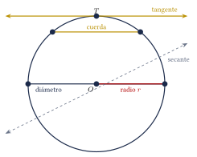
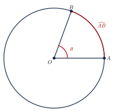
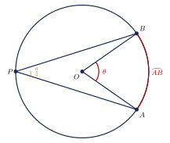
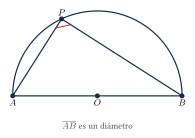
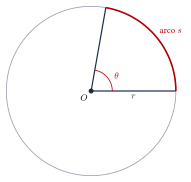
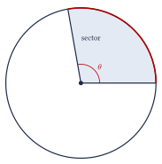
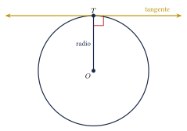

Capítulo 22
Circunferencia y círculo
IPN CENEVAL
La circunferencia y el círculo aparecen en numerosos problemas de longitudes, áreas y relaciones angulares. Aunque ambos conceptos están estrechamente relacionados, no representan el mismo objeto: la circunferencia es una curva cerrada, mientras que el círculo incluye también la región interior. En este capítulo estudiarás sus elementos principales, las relaciones entre ángulos y arcos, las fórmulas de longitud y área, y las propiedades de las rectas tangentes.
22.1 Circunferencia y círculo#
La circunferencia es el conjunto de todos los puntos del plano que se encuentran a una misma distancia de un punto fijo llamado centro.
La distancia constante entre el centro y cualquier punto de la circunferencia se denomina radio.
El círculo es la región del plano formada por la circunferencia y todos sus puntos interiores.
Por tanto:
- la circunferencia es el borde;
- el círculo es la región completa, incluido el borde.
No deben confundirse la longitud de la circunferencia y el área del círculo.
La longitud de la circunferencia se expresa en unidades lineales, como centímetros o metros. El área del círculo se expresa en unidades cuadradas, como centímetros cuadrados o metros cuadrados.
22.2 Elementos de una circunferencia#
Los principales elementos relacionados con una circunferencia son:
- El centro es el punto fijo que se encuentra a la misma distancia de todos los puntos de la circunferencia.
- Un radio es un segmento que une el centro con un punto de la circunferencia.
- Un diámetro es una cuerda que pasa por el centro. Su longitud es igual al doble del radio: \[d=2r.\]
- Una cuerda es un segmento cuyos extremos pertenecen a la circunferencia.
- Un arco es una porción de la circunferencia comprendida entre dos puntos.
- Una recta secante interseca la circunferencia en dos puntos distintos.
- Una recta tangente tiene exactamente un punto en común con la circunferencia. Este punto se denomina punto de tangencia.
Todo diámetro es una cuerda, pero no toda cuerda es un diámetro. El diámetro es la cuerda de mayor longitud que puede trazarse en una circunferencia.
Los principales elementos pueden observarse en la siguiente figura:

22.3 Longitud de la circunferencia y área del círculo#
Para una circunferencia de radio \(r\) y diámetro \(d=2r\), su longitud es:
También puede calcularse mediante:
El área del círculo correspondiente es:
Encuentra la longitud de la circunferencia y el área del círculo de radio:
Ver solución
Calculamos la longitud:
Utilizando \(\pi\approx3.1416\):
Calculamos el área:
Aproximadamente:
El diámetro de una circunferencia mide:
Encuentra su longitud.
Ver solución
Podemos utilizar directamente:
Por tanto:
Aproximadamente:
Cuando no se solicita una aproximación decimal, es preferible conservar el resultado exacto en términos de \(\pi\).
Por ejemplo:
es un valor exacto, mientras que:
es una aproximación.
22.4 Arcos y ángulos centrales#
Un ángulo central tiene su vértice en el centro de la circunferencia y sus lados son dos radios.
La medida en grados de un arco menor es igual a la medida de su ángulo central correspondiente.
Si:
entonces:

22.5 Ángulos inscritos#
Un ángulo inscrito tiene su vértice sobre la circunferencia y sus lados contienen cuerdas de la circunferencia.
La medida de un ángulo inscrito es igual a la mitad de la medida del arco que intercepta:
Si un ángulo central y un ángulo inscrito interceptan el mismo arco, entonces:
La siguiente figura muestra un ángulo central y un ángulo inscrito que interceptan el mismo arco \(\widehat{AB}\):

Un ángulo inscrito intercepta un arco de:
¿Cuánto mide el ángulo?
Ver solución
Aplicamos el teorema del ángulo inscrito:
El ángulo inscrito mide:
Un ángulo central mide:
¿Cuánto mide un ángulo inscrito que intercepta el mismo arco?
Ver solución
El ángulo inscrito mide la mitad del ángulo central:
22.6 Ángulo inscrito en una semicircunferencia#
Todo ángulo inscrito que intercepta un diámetro mide:
De manera equivalente, todo triángulo inscrito en una semicircunferencia cuyo lado coincide con el diámetro es un triángulo rectángulo.

En la figura anterior, el vértice del ángulo recto es \(P\), que se encuentra sobre la semicircunferencia. El lado opuesto al ángulo recto es el diámetro \(\overline{AB}\).
22.7 Longitud de arco#
Sea una circunferencia de radio \(r\). Si un arco corresponde a un ángulo central de \(\theta\) grados, su longitud es:
De manera equivalente:
La longitud del arco representa la fracción:
de la longitud total de la circunferencia.

Encuentra la longitud de un arco de \(60^\circ\) en una circunferencia de radio:
Ver solución
Aplicamos la fórmula:
Aproximadamente:
22.8 Sector circular#
Un sector circular es la región del círculo limitada por dos radios y el arco comprendido entre ellos.
Si un sector de radio \(r\) corresponde a un ángulo central de \(\theta\) grados, su área es:

Encuentra el área de un sector circular de radio:
y ángulo central:
Ver solución
Aplicamos la fórmula:
Aproximadamente:
22.9 Rectas tangentes#
El radio trazado hasta el punto de tangencia es perpendicular a la recta tangente.
Si \(T\) es el punto de tangencia, entonces:
Si desde un mismo punto exterior \(P\) se trazan dos segmentos tangentes a una circunferencia y sus puntos de tangencia son \(A\) y \(B\), entonces:

El radio de una circunferencia mide \(10\ \text{cm}\). Desde un punto exterior \(P\) se traza un segmento tangente, y la distancia entre \(P\) y el centro es:
Encuentra la longitud del segmento tangente.
Ver solución
Sea \(T\) el punto de tangencia. Como el radio \(\overline{OT}\) es perpendicular a la tangente \(\overline{PT}\), el triángulo \(\triangle OPT\) es rectángulo.
La hipotenusa mide:
y uno de los catetos mide:
Aplicamos el teorema de Pitágoras:
El segmento tangente mide:
22.10 Ejercicios propuestos#
Encuentra la longitud de la circunferencia y el área del círculo de radio:
Ver solución
El diámetro de una circunferencia mide:
Encuentra su longitud.
Ver solución
\(r = 10\) cm. \[L = 2\pi(10) = 20\pi \approx 62.8 \text{ cm}.\]
Encuentra el radio de un círculo cuya área es:
Ver solución
\(\pi r^2 = 36\pi\), entonces \(r^2 = 36\), \(r = 6\) cm.
Un ángulo inscrito intercepta un arco de:
¿Cuánto mide el ángulo?
Ver solución
Un ángulo central mide:
¿Cuánto mide un ángulo inscrito que intercepta el mismo arco?
Ver solución
Encuentra la longitud de un arco de \(90^\circ\) en una circunferencia de radio:
Ver solución
Encuentra el área de un sector circular de radio:
y ángulo central:
Ver solución
El radio de una circunferencia mide \(8\ \text{cm}\). Desde un punto exterior \(P\) se traza un segmento tangente. Si la distancia de \(P\) al centro es:
¿cuánto mide el segmento tangente?
Ver solución
Un triángulo está inscrito en una semicircunferencia y uno de sus lados coincide con el diámetro. ¿Dónde se encuentra el vértice del ángulo recto?
Ver solución
El vértice del ángulo recto está sobre la circunferencia (es el punto donde el ángulo inscrito subtiende el diámetro).